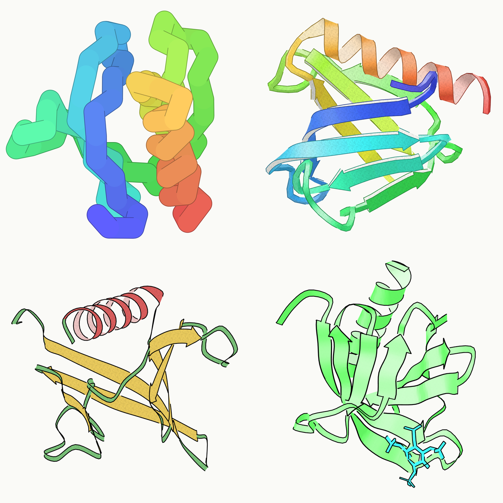

Protein figures without opening PyMOL
py2Dmol turns a PDB ID into a drawing you can actually use, in a browser tab, with a transparent background and the ligand still in it.
Type a four-character PDB ID and you get a drawing. py2Dmol fetches from the RCSB PDB or from the AlphaFold database, renders in the browser, and saves a PNG. Nothing leaves the tab: all the processing is local. It is written by Sergey Ovchinnikov at MIT and released under the Beer-ware licence, which asks only that you buy him a beer if you ever meet.

Two things make it worth a bookmark. The PNG comes out with a transparent background, so it drops onto a slide without a white box around it. And it draws ligands, which is the thing quick viewers usually skip and the thing I need most.
There is also a Python package, pip install py2Dmol, meant for Colab and Jupyter, with the same styles plus pAE and MSA panels. The browser version is the one I actually reach for.
Credit. py2Dmol is by Sergey Ovchinnikov. Web version: py2dmol.solab.org. Source: github.com/sokrypton/py2Dmol. The tool is his; the images here are just my own output.
Structure from the RCSB PDB, entry 1FAO.
不打开 PyMOL 也能出蛋白质配图
py2Dmol 在一个浏览器标签页里把 PDB ID 变成能直接用的图，背景透明，配体也画得出来。
输入四位 PDB ID 就出图。py2Dmol 从 RCSB PDB 或 AlphaFold 数据库取结构，在浏览器里渲染，导出 PNG。数据不出标签页，全部在本地处理。作者是 MIT 的 Sergey Ovchinnikov，代码以 Beer-ware 协议发布，唯一的条件是哪天见面请他喝杯啤酒。
值得存书签的有两点。导出的 PNG 背景是透明的，贴到幻灯片上不会带一个白框。以及它会画配体，这恰好是大多数快速看图工具略过、而我最需要的东西。
另外还有一个 Python 包，pip install py2Dmol，是给 Colab 和 Jupyter 用的，风格一样，另外带 pAE 和 MSA 面板。我平时真正在用的还是网页版。
署名。py2Dmol 的作者是 Sergey Ovchinnikov。网页版：py2dmol.solab.org，源码：github.com/sokrypton/py2Dmol。工具是他写的，这里的图只是我自己跑出来的结果。
结构来自 RCSB PDB，条目 1FAO。
PyMOL を開かずにタンパク質の図をつくる
py2Dmol はブラウザのタブの中で、PDB ID をそのまま使える図に変える。背景は透明で、リガンドも描かれる。
四文字の PDB ID を入れれば図が出る。py2Dmol は RCSB PDB か AlphaFold データベースから構造を取得し、ブラウザ内で描画して PNG を書き出す。データはタブの外に出ず、処理はすべてローカルで行われる。作者は MIT の Sergey Ovchinnikov、ライセンスは Beer-ware で、条件はいつか会ったらビールを一杯おごること、それだけである。
ブックマークする価値があるのは二点。書き出した PNG は背景が透明なので、スライドに貼っても白い枠がつかない。そしてリガンドを描いてくれる。手軽なビューアが省きがちで、こちらが最も必要としている部分である。
Python パッケージもある。pip install py2Dmol で、Colab と Jupyter 向け。同じスタイルに加えて pAE と MSA のパネルが使える。普段実際に開いているのはブラウザ版のほうである。
クレジット。py2Dmol の作者は Sergey Ovchinnikov。ウェブ版：py2dmol.solab.org、ソース：github.com/sokrypton/py2Dmol。ツールは彼の作であり、ここに載せた図は自分で出力しただけのものである。
構造は RCSB PDB のエントリ 1FAO より。